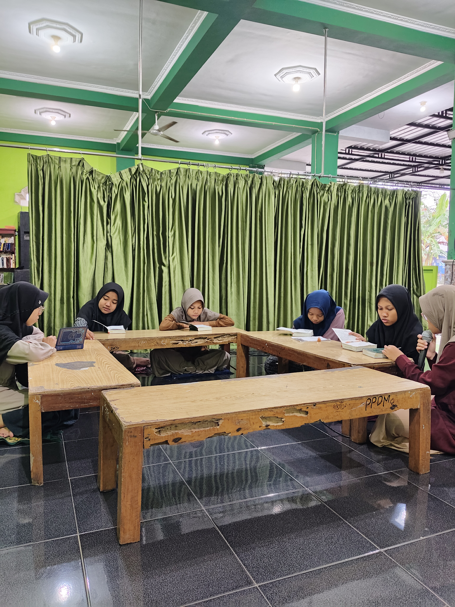
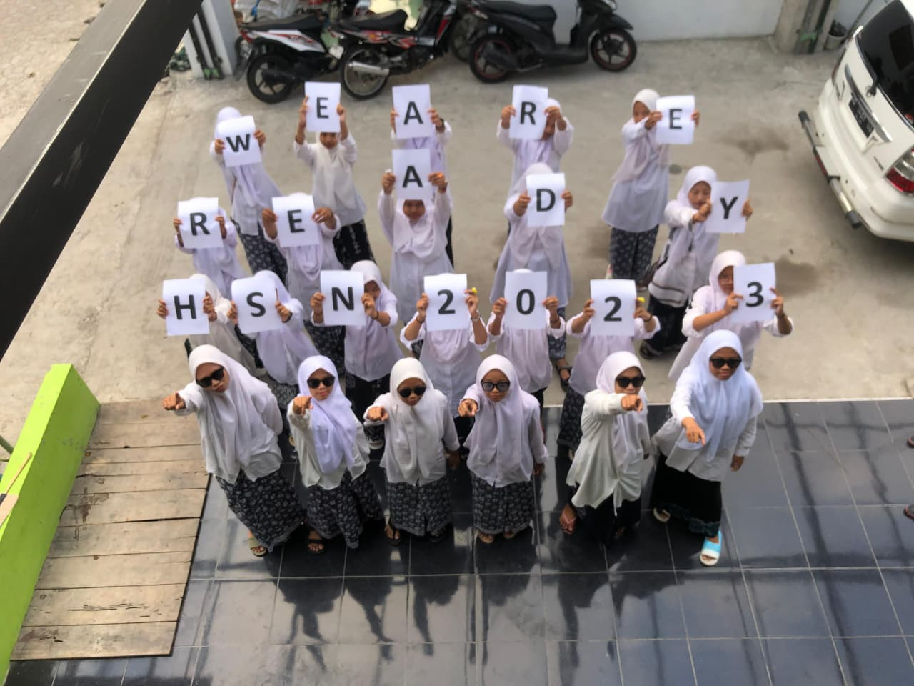
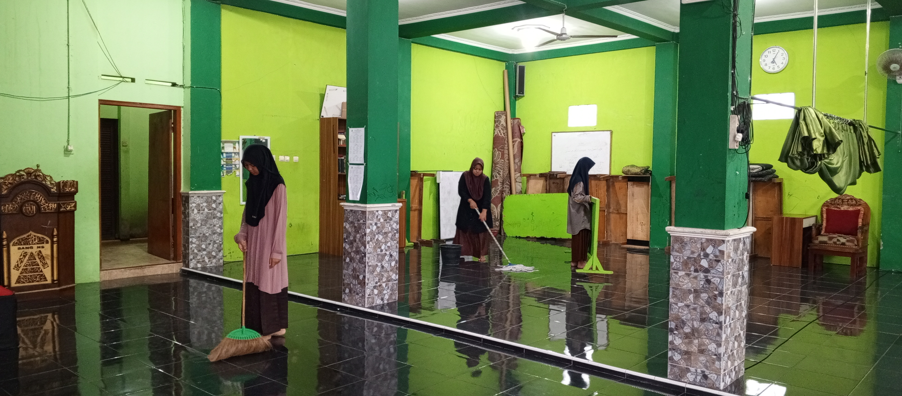
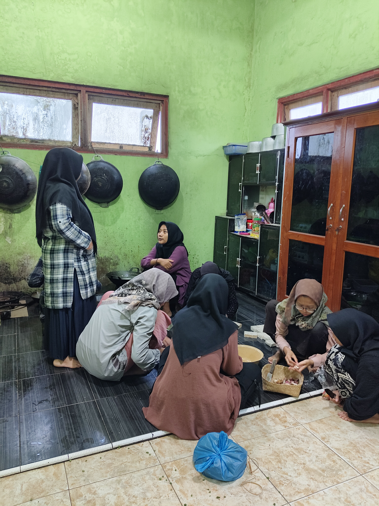

📖 Tahfidz Al-Qur'an
Setoran Harian
Setiap santri Bin-Nadzri dan Bil-Ghoib wajib setoran halaman baru minimal 1 halaman per hari kepada musyrif/musyrifah yang ditunjuk. Kegiatan berlangsung setiap subuh setelah shalat berjamaah.

TahfidzSemaan Mingguan
Sesi mengulang hafalan secara kolektif yang dilaksanakan setiap sore hari pukul 16.00–17.30 WIB. Metode talaqqi memastikan kualitas bacaan sesuai standar tajwid.
 Tahfidz
Tahfidz
Setoran Bin Nadzri
Evaluasi berkala setiap semester di hadapan dewan penguji untuk mengukur kualitas hafalan, kelancaran, dan pemahaman tajwid santri secara menyeluruh.
📚 Kajian Kitab Kuning
Menyelami khazanah keilmuan Islam klasik melalui metode pembelajaran yang relevan dan kontekstual.
.jpg) Kitab Kuning
Kitab Kuning
Pengajian Subuh (Bandongan)
KH. Ahmad Fauzi langsung memimpin pengajian kitab klasik setiap subuh. Kitab yang dikaji antara lain Riyadhus Shalihin, Fathul Qorib, dan Tafsir Jalalain.
Halaqah Sorogan
Santri membaca kitab secara mandiri di hadapan ustadz. Metode ini melatih kemampuan membaca kitab gundul dengan benar dan memahami maknanya secara kontekstual.
 Kitab Kuning
Kitab Kuning
Mudzakarah Ilmiah
Forum diskusi ilmiah mingguan di mana santri senior memimpin pembahasan isu-isu fiqh kontemporer berdasarkan referensi kitab-kitab klasik yang telah dipelajari.
Pembinaan Karakter dan Galeri Kegiatan
Membentuk kepribadian santri yang tangguh, mandiri, dan berdaya saing melalui kegiatan yang terstruktur.
 Ummu Haniah
Ummu Haniah
 Ziarah Santri
Ziarah Santri
 Hadroh Santri Putra
Hadroh Santri Putra

Konten Hari Santri Nasional Kyai Muchsin bersama habib
Kyai Muchsin bersama habib

Ro'an Juara II Cabang Cerpen RMI-PWNU DIY
Juara II Cabang Cerpen RMI-PWNU DIY
 Upacara HSN
Upacara HSN
 Isra' Mi'raj
Isra' Mi'raj

Masak Bersama